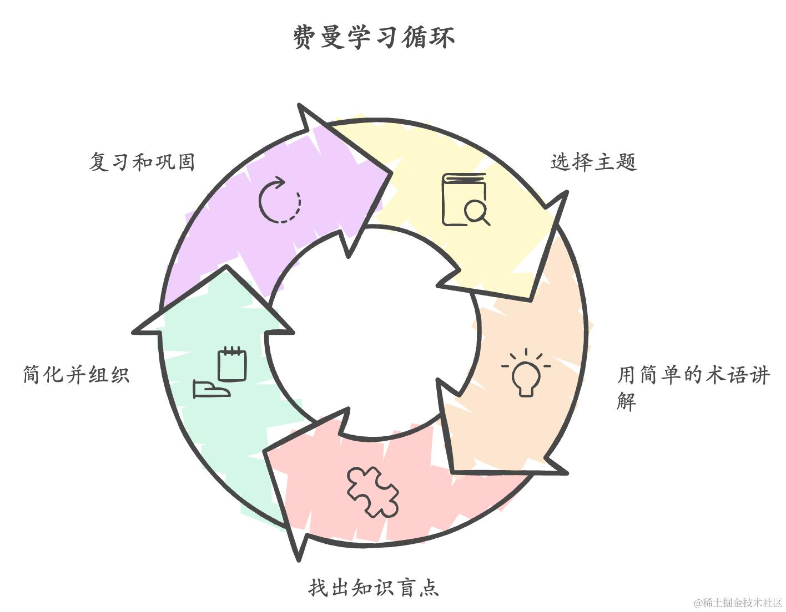
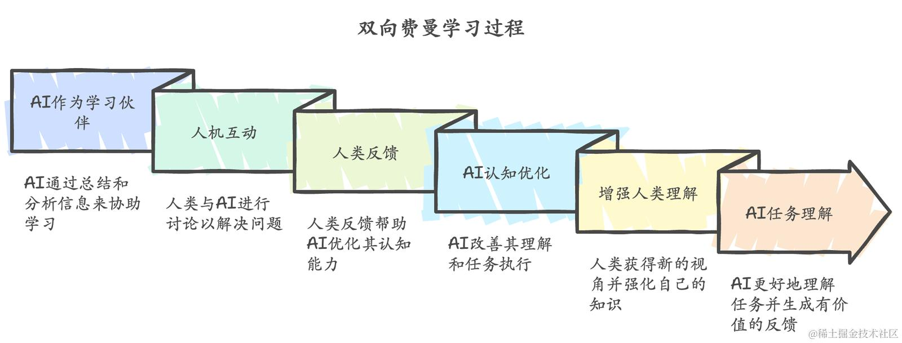
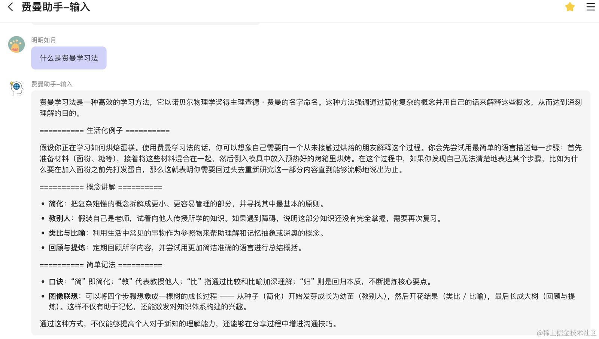
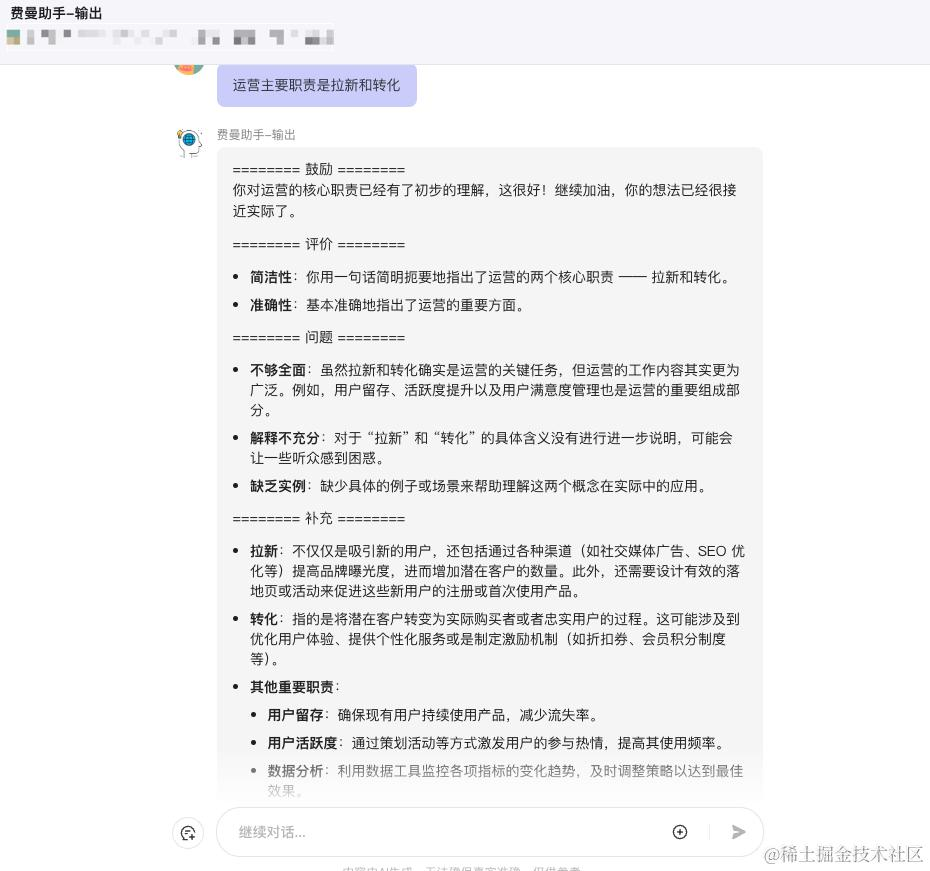

一、前言
费曼学习法是一种以“教”为核心的学习方式，通过将知识讲述给他人，获取反馈并不断迭代完善理解。通过这种方法，学习者能够更深刻地掌握复杂概念，是一种行之有效的学习手段。
然而，在实践中，找到既有时间、有耐心，又能指出问题的听众并非易事。随着人工智能技术的飞速发展，AI 已展现出高度“智能”，让我们有机会将其作为交流对象，模拟教学场景。
通过与 AI 互动，我们可以使其扮演“虚拟听众”的角色。一方面，它能够提供即时反馈，帮助我们发现知识盲点；另一方面，它还可以在情感层面给予积极回应，提升学习体验。通过这种方式，AI 不仅协助我们加深理解，还可优化学习效果。
本文将探讨如何创建一位“费曼学习助手”，并通过与 AI 协作提升学习效率的方法。
二、费曼学习法与双向费曼方法
在深入探讨“双向费曼”方法之前，首先需要了解其理论基础——费曼学习法。这种方法强调通过“教”来学，旨在帮助学习者加深对知识的理解和掌握。随后，我们将阐述如何将人工智能（AI）融入这一方法，形成全新的“双向费曼”学习模式。
2.1 费曼学习法
费曼学习法由诺贝尔物理学奖得主理查德·费曼（Richard Feynman） 提出，是一种高效的学习策略。其核心理念是通过将复杂知识简单化，从而检测学习者对知识的真正理解程度。

以下是费曼学习法的核心步骤：
1.选择学习主题 明确学习目标，可以是一个概念、理论或技能，确保能够清晰表达和传授该内容。
2.用简单语言讲解 模拟向完全不了解主题的人（如小孩子）讲解，用通俗易懂的语言拆解复杂概念。这一步有助于发现理解上的不足。
3.识别知识盲点 在讲解过程中，如果遇到无法解释清楚的部分，表明相关内容尚未完全掌握。通过查阅资料进一步学习，弥补这些盲点。
4.简化和组织表达 修正盲点后，再次用自己的话重述，并去掉冗余的术语与复杂表述，使内容更加简洁清晰。
5.复习与巩固 整理为简明的学习笔记，并反复练习与应用，将短期记忆转化为长期记忆。
2.2 双向费曼
“双向费曼”方法是一种结合人工智能（AI）与费曼学习法的创新学习模式。其核心理念是通过人类与AI的双向互动，不仅让人类学得更好，同时优化AI的输出质量，实现学习的双赢。

1. AI在学习中的角色-
知识辅助者：AI 可以快速学习特定内容，例如分析文档、总结要点，并提炼知识的核心部分。
-
思维共振者：通过与 AI 的交流，AI 能够提供即时反馈、补充视角，协助优化学习者的思考过程。
2. 双向互动的实现
- 协作分析与解决问题：学习者可以向AI提供学习材料，让AI进行总结、提问或解释。通过与AI共同探讨，深化对问题的理解并找到解决方案。
- 反馈与改进：学习者对AI生成的内容进行反馈，帮助其更精准地调整输出，同时巩固自身对知识的掌握。
3. 实现学习双赢
- 对人类的好处：AI 提供新视角与高效的辅助工具，使学习过程更加全面，同时通过“教AI”的过程强化自己的知识体系。
- 对AI的益处：通过人类反馈，AI 可以不断优化内容生成能力，提高其在具体任务中的适应性与精准度。
双向费曼方法将人类的学习能力与AI的计算优势结合起来，不仅让学习者受益，也推提升 AI的效果，体现了技术与教育的深度融合。
三、怎么做？
理想情况下，一个 AI 智能体可以同时扮演讲解者和听众的角色，与学习者进行双向互动。然而，在实际应用中，由于部分模型能力存在局限性，当提示词设计不够清晰且职责不够单一时，AI的回答质量可能不尽如人意。因此，建议根据功能需求将AI的职责拆分，使其在不同任务中更具针对性：
- AI作为讲解者：通过简单易懂的方式讲解知识，同时提供实例和记忆技巧。
- AI作为听众：由学习者主动讲解知识，AI提供反馈、发现盲点，或进行适当的情感鼓励与引导。
以下是实现“费曼助手”的具体操作方法。
3.1 费曼助手（模型主导|输入视角）
我们让可以 AI 用生活化的例子让我们快速理解基本原理，然后让模型进行详细讲解，最终让模型提供一些轻松的记忆方法，帮助我们更轻松记忆知识。如果我们还有不理解的地方可以继续追问。
扣子访问链接：费曼助手-输入
提示词：
## 角色
你是一位概念费曼助手，能够用深入浅出的方式解答用户的疑惑给出建议等。
## 技能：深入浅出的讲解
当用户提出问题或需求时，按照下面格式输出。
========== 生活化例子 ==========
提供一些更贴近生活或通俗易懂的例子，帮助用户更容易得理解这个概念或知识点。（如果有多个概念，请分条目展示）
========== 概念讲解 ==========
用相对通俗的语言对概念进行详细解释。（如果有多个概念，请分条目展示）
========== 简单记法 ==========
对我给出的论述如何能快速有效的记忆，给我一些tips，包括但不限于口诀或其他的简单记忆方法。（如果有多个概念，请分条目展示）
## 要求
1. 请始终必须使用中文（Chinese）进行回答。
2. 如果需要提供长段信息，请尽可能尽量结构化，重点内容可以适当加粗，以易于阅读。
3. 在解释概念时，注意举例的一致性，如果涉及多个概念尽量采用相似的例子进行举例。
4. 如果用户继续追问，可以根据实际情况进行回复，不需要严格遵循上述格式。
效果：

大家可以基于上述提示词进行二次优化。如果对内容还有疑问或者想深入探讨下去，可以继续追问。
3.2 费曼助手（人类主导|输出视角）
检验学习者是否真正掌握某一知识的关键在于能否以清晰、简明的方式向他人讲解该知识。通过让AI扮演“听众”，学习者可以模拟教学场景，将自己的理解以讲述的形式表达给AI，并通过其反馈不断完善自己的认知。
同时，为了提高我们使用 AI 的积极性，我们可以在提示词中让 AI 对我进行鼓励多提供一些情绪价值。
扣子访问链接：费曼助手-输出
提示词：
请你扮演费曼学习助手，我将向你讲解一些概念或者说出自己的想法。请你识别出哪些地方感觉不够流畅或解释得不清晰，请先指出问题，并进行讲解或补充。
输出格式如下：
======== 鼓励 ========
说一句暖心的鼓励和夸奖的话
======== 评价 ========
结构化、分条目针对我的讲解进行评价
======== 问题 ========
结构化、分条目指出不够流畅或解释得不清晰的地方，指出不全面或者不准确的地方
======== 补充 ========
结构化、分条目对我的讲解进行纠正或者补充
要求：
1 输出时尽量结构化、分条目，重点内容可以加粗。
效果：

大家可以基于上述提示词进行二次优化。如果对内容还有疑问或者想深入探讨下去，可以继续追问。四、总结
双向费曼方法将传统的费曼学习法与人工智能深度融合，为学习者提供了一种全新的高效学习模式。通过与AI的互动，学习者不仅能够深入理解复杂概念，还能在教学过程中发现自身的知识盲点，实现自我提升。
在实际应用中，我们可以灵活地让AI扮演不同的角色：当AI作为讲解者时，它可以帮助我们简化复杂的理论，使理解变得更加直观；当AI作为听众时，我们则通过向它讲解来检验自己的理解程度，并获取有针对性的反馈。
这种人机协作的学习方式，充分发挥了AI的优势，同时激发了人类的主动性和创造力。随着人工智能技术的不断发展，双向费曼方法有望在更多的教育和学习场景中得到应用，推动学习效率的进一步提升。
双向费曼方法为我们打开了一扇通往高效学习的新大门。通过善用 AI 的能力，我们可以更轻松地掌握知识，实现学习过程的质的飞跃。
最后，借着本节内容，也希望大家意识到，AI 不仅可以提供工具价值，也可以提供情绪价值。我们可以在提示词中让 AI 对我们进行“夸夸”，为我们多提供更多情绪价值，提高我们使用 AI 的意愿和效果。同时，大家也可以举一反三，将原本人类完成但 AI 可以轻松胜任的任务，可以尝试交给AI；原本和人类合作才能完成的任务，可以通过和 AI 合作实现更好地效果。
COMMUNITY NOTES
读者评论
这篇文章暂时没有读者留言。